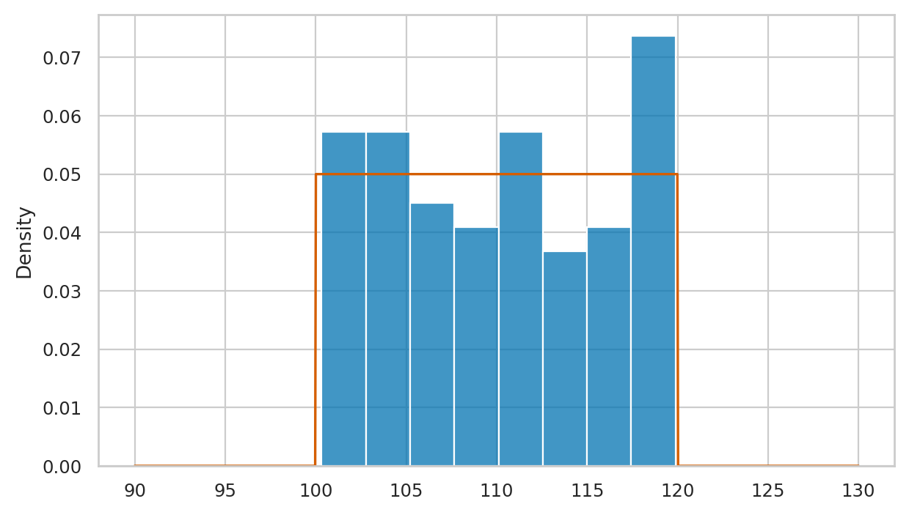
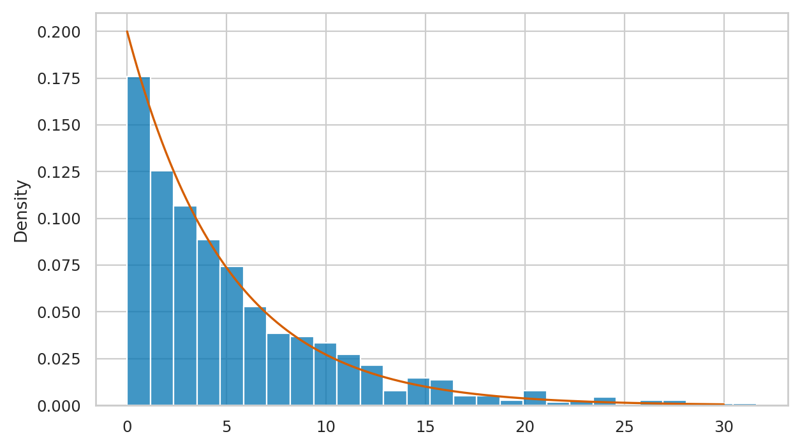
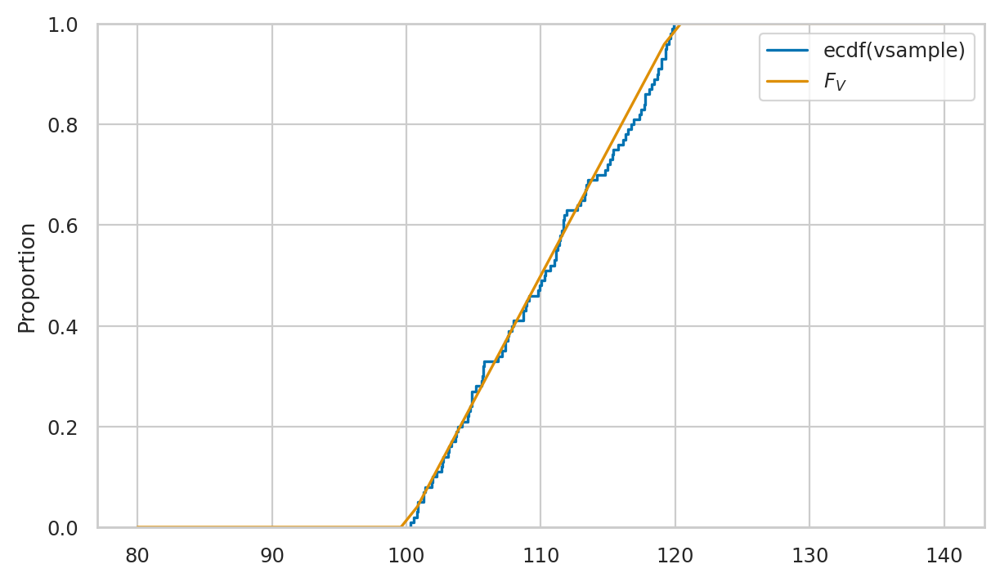
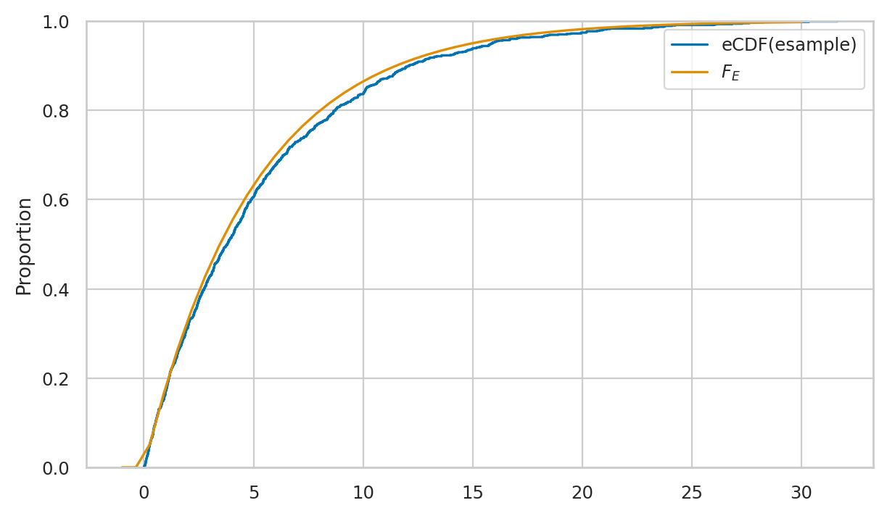
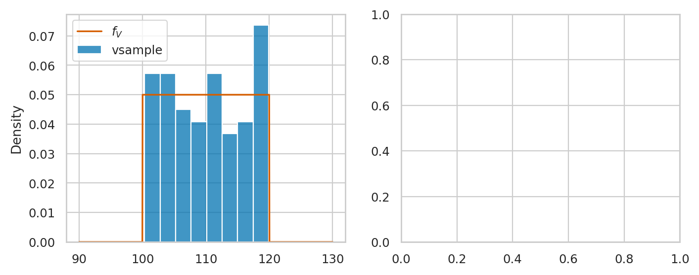
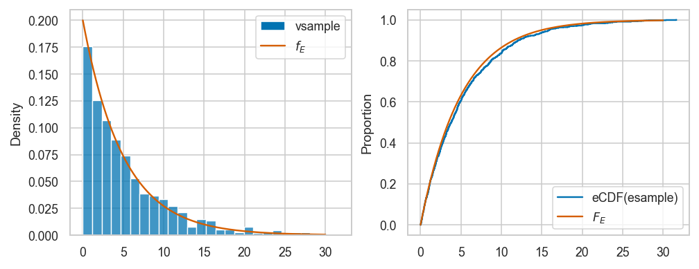
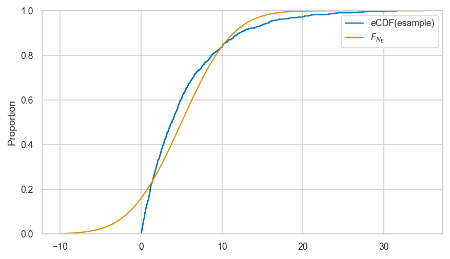
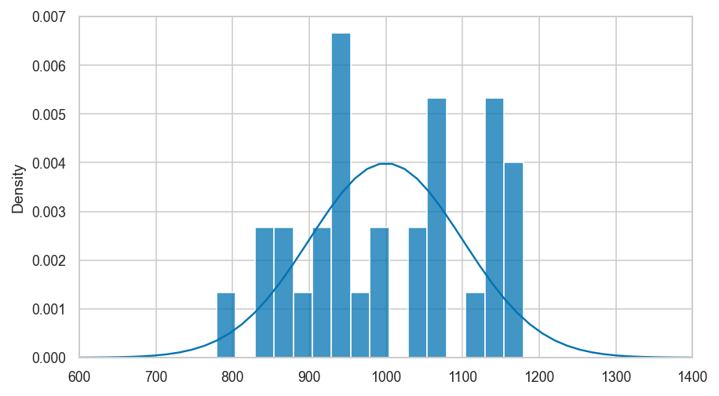

Section 2.7 — Random variable generation#
This notebook contains the code examples from Section 2.7 Random variable generation of the No Bullshit Guide to Statistics.
Notebook setup#
# load Python modules
import numpy as np
import pandas as pd
import random
import seaborn as sns
import matplotlib.pyplot as plt
# Figures setup
sns.set_theme(
context="paper",
style="whitegrid",
palette="colorblind",
rc={'figure.figsize': (7,4)},
)
%config InlineBackend.figure_format = 'retina'
# set random seed for repeatability
random.seed(16)
np.random.seed(16)
Why simulate?#
Running simulations of random variables is super useful:
fake data generation
probability calculations
statistical procedures
(see book)
General procedure to simulate \(\mathbb{E}_X(g)\):
n = 30
gvalues = []
for i in range(0,n):
xi = gen_x()
gi = g(xi)
gvalues.append(gi)
expg = sum(gvalues) / n
We’ll see different variations of this procedure (for loop that generates many random observations and does something with them).
Random variable generation using a computer#
import random
random.random()
0.36152277491407514
# # ALT.
# import numpy as np
# np.random.rand()
Discrete random variable generation#
Splitting up the uniform random variable …
Example 1: generating Bernoulli observations#
Consider the Bernoulli random variable \(B \sim \textrm{Bernoulli}(p)\), which corresponds to a coin toss with probability of heads (outcome 1) equal to \(p\), and probability of tails (outcome 0) \((1-p)\).
The function gen_b defined below is a generator of observations from the random variable \(B\).
def gen_b(p=0.5):
u = random.random()
if u < p:
return 1
else:
return 0
To generate a random observation from \(B \sim \textrm{Bernoulli}(p=0.3)\),
we simply need to call the function gen_b with the keyword argument p=0.3.
gen_b(p=0.3)
0
Let’s now generates n=1000 observations from \(B \sim \textrm{Bernoulli}(p=0.3)\),
and compute the proportion of the outcome \(1\) (heads) in the list.
n = 1000
bsample = [gen_b(p=0.3) for i in range(0,n)]
bsample.count(1) / n
0.316
# # ALT. Use regular for-loop, instead of list comprehension syntax
# n = 1000
# bsample = []
# for i in range(0,n):
# b = gen_b(p=0.3)
# bsample.append(b)
# bsample.count(1) / n
Continuous random variable generation#
See the book or explanations of the the invers-CDF trick.
Example 2: generating observations from a shifted uniform distribution#
\(V \sim \mathcal{U}(\alpha=100,\beta=120)\)
def gen_v():
u = random.random()
v = 100 + 20*u
return v
gen_v()
107.26199234069637
n = 100
vsample = [gen_v() for i in range(0,n)]
vsample[0:3] # first three observations
[103.6386436977451, 117.34140363667541, 113.35634072970831]
min(vsample), max(vsample) # Range
(100.32987267319582, 119.88187770589093)
# plot a histogram of data in `vsample`
sns.histplot(vsample, stat="density")
# plot the pdf of the model
from scipy.stats import uniform
rvV = uniform(100,20)
xs = np.linspace(90,130,1000)
sns.lineplot(x=xs, y=rvV.pdf(xs), color="r")
<Axes: ylabel='Density'>
{kind=link}

Example 3: generating observations from an exponential distribution#
def gen_e(lam):
u = random.random()
e = -1 * np.log(1-u) / lam
return e
Where lam is the \(\lambda\) (lambda) parameter chosen for exponential model family.
np.random.seed(6)
n = 1000 # number of observations to generate
esample = [gen_e(lam=0.2) for i in range(0,n)]
esample[0:3] # first three observations
[0.5024273707608603, 10.625297726488984, 2.731193337322976]
# plot a histogram of data in `esample`
sns.histplot(esample, stat="density")
# plot the pdf of the model
from scipy.stats import expon
lam = 0.2
rvE = expon(0,1/lam)
xs = np.linspace(0,30,1000)
sns.lineplot(x=xs, y=rvE.pdf(xs), color="r")
<Axes: ylabel='Density'>
{kind=link}

We’ll develop various way to analyze this “goodness of fit” between the sample esample data we generated
and the theoretical model \(f_E\) in the remainder of this notebook.
Empirical distributions#
Let’s write a function that compute the value empirical cumulative distribution (eCDF)
of the sample data. The function takes two inputs: data the sample of observations,
and b, the value where we want to evaluate the function.
def ecdf(data, b):
sdata = np.sort(data)
count = sum(sdata <= b) # num. of obs. <= b
return count / len(data) # proportion of total
Note the sorting step is not strictly necessary,
but it guarantees the sdata is a NymPy array object which allows the comparison to work.
ecdf(vsample, 110)
0.48
ecdf(esample, 5)
0.606
Visualizing the empirical cumulative distribution#
sns.ecdfplot(vsample, label="ecdf(vsample)")
from scipy.stats import uniform
rvV = uniform(100,20)
bs = np.linspace(80,140)
sns.lineplot(x=bs, y=rvV.cdf(bs), label="$F_V$")
<Axes: ylabel='Proportion'>
{kind=link}

# # ALT. manually plot ecdf using lineplot
# bs = np.linspace(80,140,1000)
# empFvs = [ecdf(vsample,b) for b in bs]
# sns.lineplot(x=bs, y=empFvs, drawstyle='steps-post')
sns.ecdfplot(esample, label="eCDF(esample)")
bs = np.linspace(-1,30)
sns.lineplot(x=bs, y=rvE.cdf(bs), label="$F_E$")
<Axes: ylabel='Proportion'>
{kind=link}

Measuring data-model fit#
Want to measure if vsample comes from \(\mathcal{U}(100,120)\).
Here are the first five values we simulated:
vsample[0:3]
[103.6386436977451, 117.34140363667541, 113.35634072970831]
We also want to check if the data we generated esample comes from \(\textrm{Expon}(\lambda=0.2)\).
esample[0:3]
[0.5024273707608603, 10.625297726488984, 2.731193337322976]
Let’s also generate an additional sample nsample
from the normal distribution \(\mathcal{N}(1000,100)\)
so we’ll be able to make a variety of comparisons.
np.random.seed(6)
from scipy.stats import norm
rvN = norm(1000, 100)
nsample = rvN.rvs(100)
nsample[0:3]
array([ 968.82163265, 1072.90039236, 1021.78207881])
Visual comparison between data and model distributions#
Shifted uniform distribution#
Here is the code for comparison of vsample and the theoretical model rvV \(= \mathcal{U}(100,120)\).
from scipy.stats import uniform
rvV = uniform(100,20)
fig, axs = plt.subplots(1,2, figsize=(8,3))
xs = np.linspace(90,130,1000)
# plot histogram of `vsample`
sns.histplot(vsample, stat="density", ax=axs[0], label="vsample")
# plot the pdf of rvV
sns.lineplot(x=xs, y=rvV.pdf(xs), color="r", ax=axs[0], label="$f_V$")
lines, labels = axs[0].get_legend_handles_labels()
axs[0].legend(reversed(lines[0:2]), reversed(labels[0:2]))
# plot a empirical cumulative distribution
sns.ecdfplot(vsample, ax=axs[1], label="eCDF(vsample)")
# plot the CDF of rvV
sns.lineplot(x=xs, y=rvV.cdf(xs), color="r", ax=axs[1], label="$F_V$")
axs[1].set_ylim(-0.05, 1.05)
---------------------------------------------------------------------------
TypeError Traceback (most recent call last)
Cell In[31], line 10
8 sns.lineplot(x=xs, y=rvV.pdf(xs), color="r", ax=axs[0], label="$f_V$")
9 lines, labels = axs[0].get_legend_handles_labels()
---> 10 axs[0].legend(reversed(lines[0:2]), reversed(labels[0:2]))
12 # plot a empirical cumulative distribution
13 sns.ecdfplot(vsample, ax=axs[1], label="eCDF(vsample)")
File /opt/hostedtoolcache/Python/3.10.15/x64/lib/python3.10/site-packages/matplotlib/axes/_axes.py:337, in Axes.legend(self, *args, **kwargs)
220 """
221 Place a legend on the Axes.
222
(...)
334 .. plot:: gallery/text_labels_and_annotations/legend.py
335 """
336 handles, labels, kwargs = mlegend._parse_legend_args([self], *args, **kwargs)
--> 337 self.legend_ = mlegend.Legend(self, handles, labels, **kwargs)
338 self.legend_._remove_method = self._remove_legend
339 return self.legend_
File /opt/hostedtoolcache/Python/3.10.15/x64/lib/python3.10/site-packages/matplotlib/legend.py:462, in Legend.__init__(self, parent, handles, labels, loc, numpoints, markerscale, markerfirst, reverse, scatterpoints, scatteryoffsets, prop, fontsize, labelcolor, borderpad, labelspacing, handlelength, handleheight, handletextpad, borderaxespad, columnspacing, ncols, mode, fancybox, shadow, title, title_fontsize, framealpha, edgecolor, facecolor, bbox_to_anchor, bbox_transform, frameon, handler_map, title_fontproperties, alignment, ncol, draggable)
459 labels = [*reversed(labels)]
460 handles = [*reversed(handles)]
--> 462 if len(handles) < 2:
463 ncols = 1
464 self._ncols = ncols if ncols != 1 else ncol
TypeError: object of type 'list_reverseiterator' has no len()
{kind=link}

Exponential distribution#
from scipy.stats import expon
lam = 0.2
rvE = expon(0,1/lam)
Here is the code for visual comparison of esample and the theoretical model rvE \(=\mathrm{Expon}(\lambda=0.2)\), based on the probability density and cumulative probability distributions.
fig, axs = plt.subplots(1,2, figsize=(8,3))
xs = np.linspace(0,30,1000)
# plot histogram of `esample`
sns.histplot(esample, stat="density", ax=axs[0], label="vsample")
# plot the pdf of rvE
sns.lineplot(x=xs, y=rvE.pdf(xs), color="r", ax=axs[0], label="$f_E$")
lines, labels = axs[0].get_legend_handles_labels()
axs[0].legend(reversed(lines[0:2]), reversed(labels[0:2]))
# plot a empirical cumulative distribution
sns.ecdfplot(esample, ax=axs[1], label="eCDF(esample)")
# plot the CDF of rvE
sns.lineplot(x=xs, y=rvE.cdf(xs), color="r", ax=axs[1], label="$F_E$")
axs[1].set_ylim(-0.05, 1.05)
(-0.05, 1.05)
{kind=link}

Using Q-Q plots to compare quantiles#
The quantile-quantile plot qqplot(data, dist)
is used to compare the positions of the quantiles of the dataset data
against the quantiles of the theoretical distribution dist,
which is an instance of one of the probability models in scipy.stats.
The easiest way to generate a Q-Q plot is to use
the function qqplot defined in the the statsmodels package.
from statsmodels.graphics.api import qqplot
Examples of good fit#
Normal data vs. the true normal model#
Let’s look at the quantiles of the data in nsample,
plotted versus the quantiles of the theoretical model \(\mathcal{N}(1000,100)\).
qqplot(nsample, dist=norm(1000,100), line='q');
{kind=link}
Normal data vs. the standard normal#
{kind=link}
Examples of bad fit#
Shifted uniform data vs. standard normal#
vsample = np.array(vsample)
qqplot(vsample, dist=norm(0,1), line="q");
{kind=link}
Exponential data vs. standard normal#
esample = np.array(esample)
qqplot(esample, dist=norm(0,1), line="q");
{kind=link}
Note the lowest quantiles don’t match (exponential data limited to zero), and the high quantiles don’t match either (exponential data has a long tail).
Shifted uniform sample vs. true model#
vsample = np.array(vsample)
qqplot(vsample, dist=rvV, line="q");
{kind=link}
Exponential sample vs. true exponential model#
qqplot(esample, dist=rvE, line="q");
{kind=link}
Generating a Q-Q plot manually (bonus material)#
If want to know how the Q-Q plot is generated,
you can look at the following function qq_plot which the same way as qqplot.
def qq_plot(sample, dist, line="q"):
qs = np.linspace(0, 1, len(sample))
xs = dist.ppf(qs)
ys = np.quantile(sample, qs)
ax = sns.scatterplot(x=xs, y=ys, alpha=0.2)
if line == "q":
# compute the parameters m and b for the diagonal
xq25, xq75 = dist.ppf([0.25, 0.75])
yq25, yq75 = np.quantile(sample, [0.25,0.75])
m = (yq75-yq25)/(xq75-xq25)
b = yq25 - m * xq25
# add the line y = m*x+b to the plot
linexs = np.linspace(min(xs[1:]),max(xs[:-1]))
lineys = m*linexs + b
sns.lineplot(x=linexs, y=lineys, ax=ax, color="r")
return ax
# # ALT2. use the `probplot` from the `scipy.stats` module
# from scipy.stats import probplot
# probplot(nsample, dist=norm(1000,100), plot=plt)
Comparing moments#
A simple way to measure how well the data sample \(\mathbf{x} = (x_1, x_2, \ldots , x_n)\) fits the probability model \(f_X\) is to check if the data distribution and the probability distribution have the same moments.
In order to easily be able to calculate the moments of the data samples,
we’ll convert vsample and esample into Pandas series objects,
which have all the necessary methods.
vseries = pd.Series(vsample)
eseries = pd.Series(esample)
Moments of uniform distribution#
vseries.mean(), rvV.mean()
(110.21271847666772, 110.0)
vseries.var(), rvV.var()
(35.95736108409104, 33.33333333333333)
Let’s now compare the skew of dataset and the skew of the distribution:
vseries.skew(), rvV.stats("s")
(0.03970716302600479, array(0.))
Finally, let’s compare the kurtosis of dataset and the kurtosis of the distribution.
vseries.kurt(), rvV.stats("k")
(-1.2584390506748377, array(-1.2))
Moments of exponential distribution#
eseries.mean(), rvE.mean()
(5.343224374466268, 5.0)
eseries.var(), rvE.var()
(27.53085874882216, 25.0)
Let’s now compare the skew of dataset and the skew of the distribution:
eseries.skew(), rvE.stats("s")
(1.7338627932228903, array(2.))
Finally, let’s compare the kurtosis of dataset and the kurtosis of the distribution.
eseries.kurt(), rvE.stats("k")
(3.557504048617028, array(6.))
Example of bad fit between higher moments#
Define the random variable rvNE as the best normal approximation to random variable rvE.
rvNE = norm(5,5)
rvNE.mean(), rvNE.var()
(5.0, 25.0)
eseries.skew(), rvNE.stats("s")
(1.7338627932228903, array(0.))
eseries.kurt(), rvNE.stats("k")
(3.557504048617028, array(0.))
Kolmogorov–Smirnov test#
from scipy.stats import ks_1samp
Let’s jump right ahead and compute the KS distance for the data and distribution of interest.
ks_1samp(nsample, rvN.cdf).statistic
0.07815466189999987
ks_1samp(esample, rvE.cdf).statistic
0.03597247001342496
ks_1samp(vsample, rvV.cdf).statistic
0.05707018183377044
Example of big distance#
ks_1samp(esample, rvNE.cdf).statistic
0.15871546070321535
sns.ecdfplot(esample, label="eCDF(esample)")
bs = np.linspace(-10,35)
sns.lineplot(x=bs, y=rvNE.cdf(bs), label="$F_{N_E}$")
<AxesSubplot:ylabel='Proportion'>
{kind=link}

KS distances after standardization (optional)#
Define the function standardize that transforms any dataset
so it will have mean zero, and standard deviation one.
def standardize(data):
xbar = data.mean()
s = data.std()
return (data-xbar)/s
# ALT. Use existing function that does the same as `standardize`
from scipy.stats import zscore
We can now report the KS distances,
between the standardized version so nsample, esample, and vsample and
standard normal \(\mathcal{N}(0,1)\),
to check how “normal” they are.
ks_1samp(zscore(nsample), norm(0,1).cdf).statistic
0.037541386171241364
ks_1samp(zscore(vsample), norm(0,1).cdf).statistic
0.10026891576437313
ks_1samp(zscore(esample), norm(0,1).cdf).statistic
0.15419311135216357
data = expon(0,10).rvs(100)
ks_1samp(zscore(data), norm(0,1).cdf).statistic
0.1781210103950946
Calculating the KS distance manually (optional)#
The computation is a little tricky since the eCDF is a stepwise function, so we need to two differences \(|F_X(x_i) - F_{\mathbf{x}}(x_i)|\) and \(|F_X(x_i) - F_{\mathbf{x}}(x_{i-1})|\).
def ks_dist(sample, rv=norm(0,1)):
"""
Compute the KS distance between observed data in `sample`
and the theoretical distribution of random variable `rv`.
"""
sample = sorted(sample)
ks_dists = []
x0 = sample[0]
ks_dist0 = rv.cdf(x0)
ks_dists.append(ks_dist0)
n = len(sample)
for i in range(1,n):
# xi
xi = sample[i]
eCDFxi = ecdf(sample, b=xi)
ks_dist1 = abs(eCDFxi - rv.cdf(xi))
ks_dists.append(ks_dist1)
# x(i-1)
xim1 = sample[i-1]
eCDFxim1 = ecdf(sample, b=xim1)
ks_dist2 = abs(eCDFxim1 - rv.cdf(xi))
ks_dists.append(ks_dist2)
# find max
max_ks_dist = max(ks_dists)
return max_ks_dist
Test 1#
ks_dist(nsample, rv=norm(1000,100))
0.07815466189999987
ks_1samp(nsample, norm(1000,100).cdf).statistic
0.07815466189999987
Test 2#
ks_dist(standardize(nsample), rv=norm(0,1))
0.037541386171241364
ks_1samp(standardize(nsample), norm(0,1).cdf).statistic
0.037541386171241364
Bootstrap sample generation#
from scipy.stats import norm
rvN = norm(1000, 100)
np.random.seed(72)
sample = rvN.rvs(30)
sample
array([1031.85454991, 932.04405655, 779.16115305, 1059.02401628,
1167.47660438, 833.40440269, 917.56612626, 1054.52603422,
1000.11861932, 924.29694777, 1062.95451919, 990.43682345,
849.21393503, 949.99869847, 1171.40102725, 877.62327349,
1139.59050836, 1041.44763431, 1151.96667669, 1139.0063404 ,
891.5999061 , 957.46318231, 937.81775307, 1145.86005158,
872.50054515, 1112.86094852, 1179.05765281, 948.13164741,
932.89197563, 1073.67607886])
print([round(val, 2) for val in sample[0:4]])
[1031.85, 932.04, 779.16, 1059.02]
sample.mean()
1004.1657229506349
Let’s generate a bootstrap sample and compute its mean:
bsample = np.random.choice(sample,30)
bsample.mean()
989.8642131674898
Let’s compute the means of \(10\) bootstrap samples:
B = 10
bmeans = []
for k in range(0,B):
bsample = np.random.choice(sample, 30)
bmean = bsample.mean()
bmeans.append(bmean)
# bmeans
print([round(bmean, 2) for bmean in bmeans])
[1002.72, 968.09, 995.78, 964.45, 1011.08, 1013.17, 1027.03, 1041.01, 969.77, 1029.55]
max(abs(bmeans - sample.mean()))
39.719674810092215
# # BONUS: draw B=1000 bootstrap samples ot obtain a full histogram
# B = 1000
# bmeans = []
# for i in range(0,B):
# bsample = np.random.choice(sample, 30)
# bmean = bsample.mean()
# bmeans.append(bmean)
# ax = sns.histplot(bmeans, stat="density")
# ax.set_xlim(600,1400)
Clarification: empirical distribution of sample is not the same as \(f_N\)#
# plot the pmf of uknown distritbuon f_N
from scipy.stats import norm
rvN = norm(1000, 100)
xs = np.linspace(600,1400)
ax = sns.lineplot(x=xs, y=rvN.pdf(xs))
# plot histogram from a single samples of size 30
sns.histplot(sample, binwidth=25, stat="density", ax=ax)
ax.set_xlim(600,1400)
(600.0, 1400.0)
{kind=link}

# TODO: stem plot of sample
# TODO: stem plot alpha=0.1 of bsamples
Discussion#
set random seed for repeatability
import random
random.seed(42)
random.random()
0.6394267984578837
import numpy as np
np.random.seed(43)
np.random.rand()
0.11505456638977896